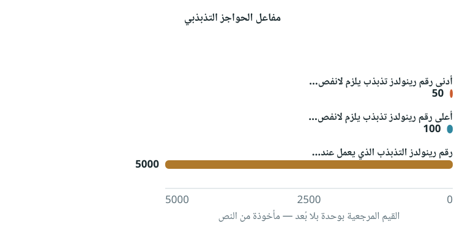

مفاعل الحواجز التذبذبي
Oscillatory Baffled Reactor
مفاعل الحواجز التذبذبي أنبوب يحمل حواجز ثابتة متباعدة بانتظام، ويُفرض على السائل تذبذب ترددي حول تدفق صافٍ، فتتشكّل دوامات بين الحواجز ويُضبط الخلط بتردد التذبذب وسعته لا بحجم المفاعل.
مفاعل الحواجز التذبذبي أنبوب أو عمود يحمل حواجز مثقوبة أو حلقية مثبَّتة على مسافات منتظمة، ويُفرض على محتواه تذبذب ترددي حول تدفق صافٍ. وتصنّفه خارطة الطريق الأوروبية للتكثيف ضمن تقنيات التكثيف ذات الفئة الديناميكية، إلى جانب تشغيل التدفق العكسي والتشغيل النبضي للمفاعلات متعددة الأطوار. وتشرح مراجعة Abbott وزملائه أن التذبذب يولّد دوامات في كل منطقة بين حاجزين، وأن شدّة الخلط تُقاس برقم رينولدز التذبذب، وأن انفصال التدفق وتشكّل الدوامات يتطلّب أن يتجاوز هذا الرقم 50 إلى 100، مقابل رقم رينولدز صافٍ في الأنابيب التقليدية يبلغ 2100. ويبيّن المصدر أن زيادة السعة أو التردد ترفع رقم رينولدز التذبذب في الموقع نفسه، فتُتاح شدّات خلط من لينة بين 50 و500 حيث تتشكّل الدوامات، إلى الأشدّ فوق 5000 حيث يعمل المفاعل عمل خزان مقلّب. ويذكر أيضاً أن تباعد الحواجز بمقدار 1.5 ضعف القطر أعطى أفضل خلط على أوسع نطاق من السعات، فصار معياراً، وأن نسبة فتحة الحاجز بين 20 و22 بالمئة قلّلت زمن الخلط إلى أدنى قيمة له.
كيف تعمل الظاهرة؟
الآلية تعتمد على تفاعل بين الحواجز الثابتة والحركة التذبذبية. حين يمرّ السائل عبر فتحة الحاجز يتسارع، ثم يتمدد في الحيّز التالي فينفصل عن الجدار ويتشكّل دوام يملأ الحيّز بين حاجزين. وعند عكس اتجاه التذبذب يُدفع الدوام في الاتجاه المعاكس، فتُجرف المناطق الراكدة وتُستبدل. وتكرار ذلك عند كل حاجز يجعل الخلط موضعياً ومنتظماً على طول الأنبوب، لا معتمداً على فرق سرعة بين المركز والجدار. ولهذا يتحقق الخلط عند أرقام رينولدز منخفضة، ويصبح ضبط الشدّة مسألة تغيير سعة التذبذب أو تردده أثناء التشغيل.
العلاقة بالأرقام
تُقاس شدّة الخلط برقم رينولدز التذبذب، وهو نسبة قوى العطالة التذبذبية إلى اللزوجة، ويُحسب من الكثافة والتردد والسعة والقطر واللزوجة. ويُقاس شكل الدوام وانتشاره برقم ستروهال، وهو نسبة القطر إلى أربعة أمثال السعة، ويُقاس التدفق الصافي برقم رينولدز الصافي، ونسبة الأول إلى الثاني تُسمّى نسبة السرعة وهي مقياس درجة التدفق الصافي في التشغيل المستمر. ويذكر المصدر أن النطاق الشائع لرقم ستروهال هو 0.15 إلى 4، وأن النطاق المُختبر يمتد من 0.01 إلى 9. أما زمن الخلط فيُعرَّف بأنه الزمن من إضافة المادة المتتبَّعة حتى بلوغ درجة تجانس محددة.
مفاهيم متقاربة
التمييز الجوهري أن الخلط في هذا المفاعل لا يعتمد على رقم رينولدز الصافي: يمكن أن يكون التدفق الصافي صفحياً تماماً ويبقى الخلط جيداً، لأن الطاقة تأتي من التذبذب لا من سرعة التدفق. وهذا يخالف الحدس المتوارث من الأنابيب التقليدية حيث يُشترط رقم رينولدز فوق 2100 للاضطراب. والتمييز الثاني أن التذبذب ليس مجرد إضافة اضطراب: هو معامل تصميم مستقل، فالمفاعل نفسه يعطي شدّات خلط مختلفة بتغيير التردد والسعة دون تغيير الهندسة. والتمييز الثالث أن الحواجز ثابتة لا متحركة، فالجهاز ليس خلاطاً دوّاراً وإن كان تشغيله ديناميكياً.
حدود التطبيق
الحدود تظهر في مواضع عدة. أولاً، التذبذب يحتاج مُولّد حركة خارجي (مكبس أو غشاء) يستهلك طاقة ويضيف تعقيداً ميكانيكياً، وهو ما لا يحتاجه الخلاط الساكن. ثانياً، أرقام التصميم المذكورة أعلاه مستخرجة من عمود قطره 50 مليمتراً في أعمال مرجعية، ولا تُنقل تلقائياً إلى أقطار أخرى بلا تحقق. ثالثاً، نسبة فتحة الحاجز المثلى تخصّ زمن خلط في إعداد بعينه، وقد تختلف في أنظمة متعددة الأطوار أو عالية اللزوجة. رابعاً، الأرقام المذكورة مأخوذة من مراجعة تنقل نتائج أعمال سابقة، لا من قياس أُجري في هذه الجلسة.

| الكمية | القيمة | المصدر |
|---|---|---|
| أدنى رقم رينولدز تذبذب يلزم لانفصال التدفق وتشكّل الدوامات | 50 بلا بُعد | [1] |
| أعلى رقم رينولدز تذبذب يلزم لانفصال التدفق وتشكّل الدوامات | 100 بلا بُعد | [1] |
| رقم رينولدز التذبذب الذي يعمل عنده المفاعل عمل خزان مقلّب | 5000 بلا بُعد | [1] |
| تباعد الحواجز المعياري بالنسبة إلى قطر الأنبوب | 1.5 ضعف القطر | [1] |
| نسبة فتحة الحاجز التي قلّلت زمن الخلط إلى أدنى قيمة | 20-22 بالمئة | [1] |
المصادر
- 1 Biological processing in oscillatory baffled reactors: operation, advantages and potential — Royal Society (Interface Focus) (2013). doi.org/10.1098/rsfs.2012.0036 · اطُّلع عليه 2026-11-28
- 2 European Roadmap for Process Intensification - Appendix 1: PI Technologies Description and Review — European Federation of Chemical Engineering (2008). efce.info/efce_media/Downloads/wppi/Appendix+1+_+Process+Intensification+Technologies+Description+and+Review_tcm24_258504-p-868.pdf · اطُّلع عليه 2026-11-28
استشهد بهذا المصطلح
الصيغتان مبنيتان من بيانات الصفحة نفسها: العنوان والتاريخ ورابط النسخة المنشورة.
مفاعل الحواجز التذبذبي — Oscillatory Baffled Reactor. (2026). ديوان المعرفة — انفراد. https://infiradev.com/diwan/terms/term-oscillatory-baffled-reactor.html
@misc{term-oscillatory-baffled-reactor2026,
title = {مفاعل الحواجز التذبذبي},
titleaddon = {Oscillatory Baffled Reactor},
howpublished = {{ديوان المعرفة — انفراد} — مرجع علمي عربي},
year = {2026},
url = {https://infiradev.com/diwan/terms/term-oscillatory-baffled-reactor.html},
urldate = {2026-11-28},
note = {مراجعة علمية: Abdullah Al-Huwaidi}
}
راجعه: Abdullah Al-Huwaidi · 2026-11-28 · آخر تحديث 2026-11-28